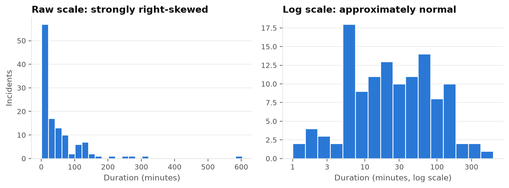
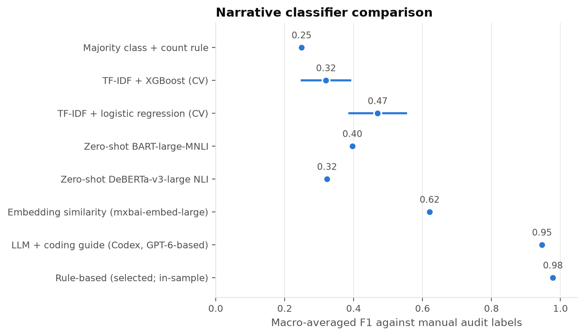
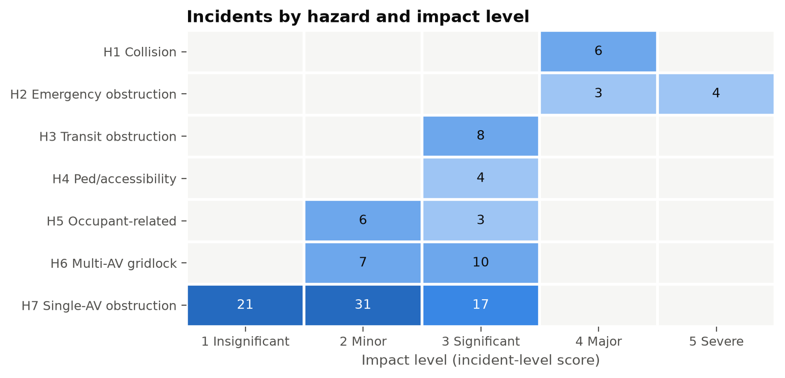
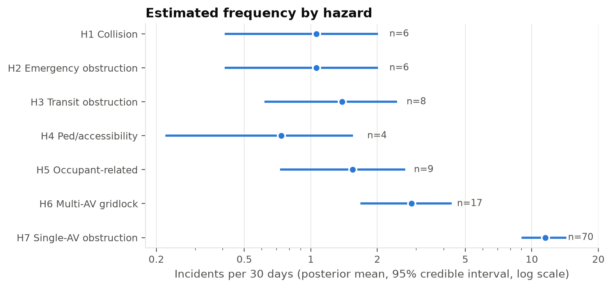
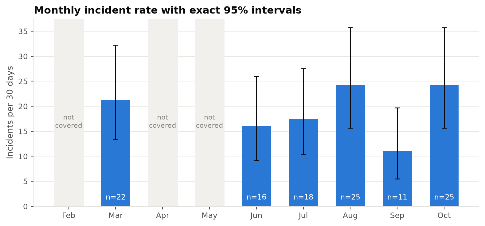
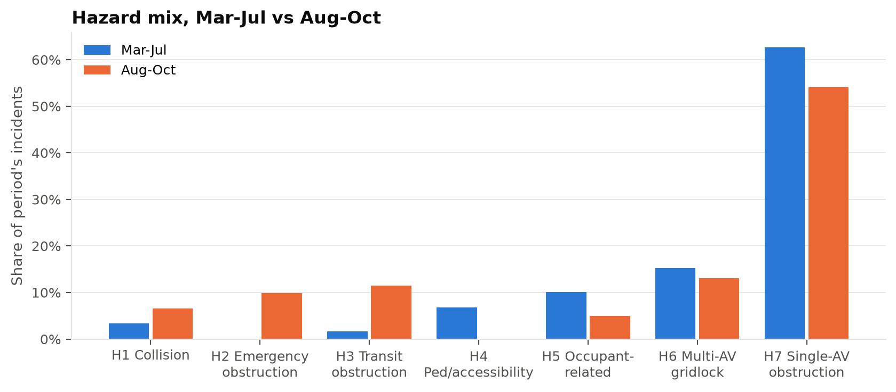
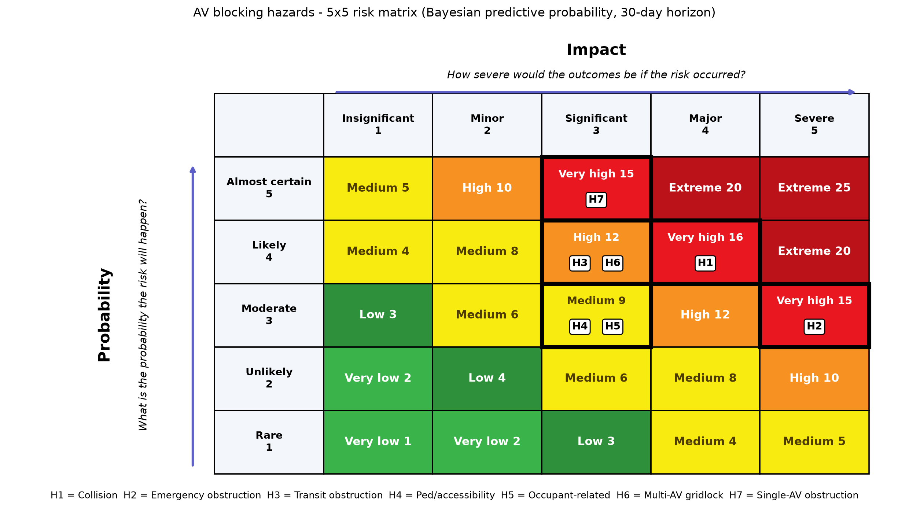

Frequency, hazard classification, and risk-matrix placement from the 2025 DEM incident log
2026-10-04
Data credit: SF DEM; original cleaning by Dr. Missy Cummings.

| Code | Hazard | What the stopped AV obstructed / caused |
|---|---|---|
| H1 | AV-involved collision | contact with a vehicle, person, or animal |
| H2 | Emergency-response obstruction | medics, fire, police, or an active emergency scene |
| H3 | Transit / rail obstruction | Muni bus/rail, cable car, tracks |
| H4 | Pedestrian / accessibility | crosswalk, curb ramp, bike lane |
| H5 | Occupant-related | asleep/unresponsive rider, door left open, trapped occupant |
| H6 | Multi-AV gridlock | 2+ AVs stuck together (common-mode failure) |
| H7 | Single-AV obstruction | general traffic only (default) |


Figure 1: Number of incidents by hazard and incident-level impact (all 123 incidents).
Impact = max(hazard consequence, duration band, cluster size). 1 Insignificant (<10 min) · 2 Minor (10–60 min, 2–4 AVs) · 3 Significant (≥60 min, transit, pedestrian path, 5+ AVs) · 4 Major (emergency obstruction, collision without injury) · 5 Severe (life-threatening emergency obstructed, injury).

Figure 2: Posterior mean frequency per 30 days with 95% Jeffreys credible intervals (log scale).
Poisson rate \(\lambda\) over \(T\) = 184 days; Jeffreys posterior \(\lambda\mid n \sim \text{Gamma}(n+\tfrac12, T)\); \(P(N_{30}\ge 1) = 1-\big(\tfrac{T}{T+30}\big)^{n+1/2}\). All incidents: 19.6 per 30 days (16.2–23.4), one every 1.5 days.

Figure 3: Monthly incident rate per 30 days with exact 95% Poisson intervals. Gray bands mark months absent from (or only partially present in) the log.
No detectable trend. Mann–Kendall exact p = 0.86 · Poisson GLM rate ratio 0.983/month (p = 0.67) · durations: Kruskal–Wallis p = 0.23, Jonckheere–Terpstra p = 0.19. The class Mar-vs-Oct Mann–Whitney replicates: W = 377.5, p = 0.064.

Figure 4: Share of each period’s incidents by hazard class.
The mix differs (p = 0.007), but narratives went from 98% truncated to 41% truncated at the same time. The combined H1–H5 share is unchanged (p = 0.22), and the multi-AV share (a structured field) has no trend (p = 0.17). The shift is not evidence of changed AV behavior.

Figure 5: 5×5 risk matrix of AV blocking hazards. Probability is the Jeffreys posterior-predictive probability of at least one qualifying incident in the next 30 days. Impact is the governing tier of each hazard’s risk curve.
Two kinds of red: H1 and H2 are consequence-driven (safety problems). H7 is volume-driven: its worst outcome is a traffic delay, but it happens every ~11 days (an operational problem).
| Hazard | Governing event | n | P(≥1 in 30 d) | Cell | Level |
|---|---|---|---|---|---|
| H1 Collision | any collision (no human injury) | 6 |
0.63 |
Likely × Major | Very high |
| H2 Emergency | life-threatening emergency obstructed | 3 |
0.41 |
Moderate × Severe | Very high |
| H3 Transit | transit/rail blocked | 8 |
0.72 |
Likely × Significant | High |
| H4 Ped/access | crosswalk/ramp/bike lane | 4 |
0.49 |
Moderate × Significant | Medium |
| H5 Occupant | medical case or 60+ min | 3 |
0.41 |
Moderate × Significant | Medium |
| H6 Multi-AV | 5+ AVs or 60+ min | 10 |
0.8 |
Likely × Significant | High |
| H7 Single-AV | blockage of 60+ min | 17 |
0.93 |
Almost certain × Significant | Very high |
Risk curve: for each observed impact tier \(k\), use the frequency of incidents with impact \(\ge k\), and place the hazard at the tier with the highest risk level. Probability and impact then refer to the same event.
| Hazard | Base (Bayesian, 30 d, covered months) | Plug-in MLE | 7-day horizon | 90-day horizon | Include February (212 d) | + supplementary incidents | Total freq x P90 impact | Manual audit labels | Embedding-model labels |
|---|---|---|---|---|---|---|---|---|---|
| H1 Collision | 4x4 Very high | 4x4 Very high | 2x4 Medium | 5x4 Extreme | 4x4 Very high | 4x4 Very high | 4x4 Very high | 4x4 Very high | 4x4 Very high |
| H2 Emergency obstruction | 3x5 Very high | 3x5 Very high | 2x5 High | 4x5 Extreme | 3x5 Very high | 3x5 Very high | 4x5 Extreme | 3x5 Very high | 3x5 Very high |
| H3 Transit obstruction | 4x3 High | 4x3 High | 3x3 Medium | 5x3 Very high | 4x3 High | 4x3 High | 4x3 High | 4x3 High | 5x3 Very high |
| H4 Ped/accessibility | 3x3 Medium | 3x3 Medium | 2x3 Medium | 4x3 High | 3x3 Medium | 3x3 Medium | 3x3 Medium | 3x3 Medium | 4x3 High |
| H5 Occupant-related | 3x3 Medium | 3x3 Medium | 2x3 Medium | 4x3 High | 3x3 Medium | 3x3 Medium | 4x3 High | 3x3 Medium | 3x3 Medium |
| H6 Multi-AV gridlock | 4x3 High | 4x3 High | 3x3 Medium | 5x3 Very high | 4x3 High | 4x3 High | 5x3 Very high | 4x3 High | 4x3 High |
| H7 Single-AV obstruction | 5x3 Very high | 5x3 Very high | 3x3 Medium | 5x3 Very high | 5x3 Very high | 5x3 Very high | 5x3 Very high | 5x3 Very high | 4x3 High |
H7 is Very high only at the 60-minute cutoff for Significant. At 90 minutes or more it is High. Nothing else moves.
| Hazard | Significant at >= 60 min | Significant at >= 90 min | Significant at >= 120 min | Significant at >= 180 min |
|---|---|---|---|---|
| H1 Collision | 4x4 Very high | 4x4 Very high | 4x4 Very high | 4x4 Very high |
| H2 Emergency obstruction | 3x5 Very high | 3x5 Very high | 3x5 Very high | 3x5 Very high |
| H3 Transit obstruction | 4x3 High | 4x3 High | 4x3 High | 4x3 High |
| H4 Ped/accessibility | 3x3 Medium | 3x3 Medium | 3x3 Medium | 3x3 Medium |
| H5 Occupant-related | 3x3 Medium | 3x3 Medium | 3x3 Medium | 3x3 Medium |
| H6 Multi-AV gridlock | 4x3 High | 4x3 High | 4x3 High | 4x3 High |
| H7 Single-AV obstruction | 5x3 Very high | 4x3 High | 4x3 High | 5x2 High |
| H7 incidents at/above threshold | 17 | 11 | 9 | 3 |
Data: SF DEM. Original data cleaning: Dr. Missy Cummings.